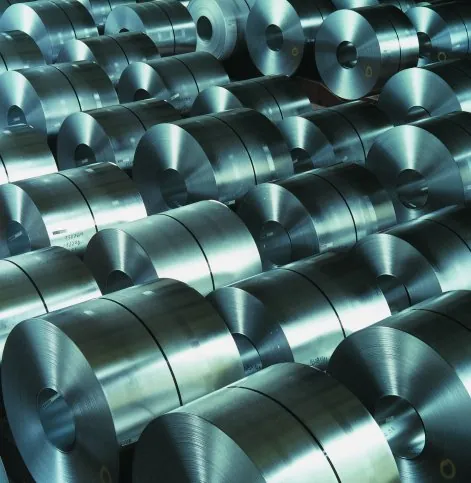
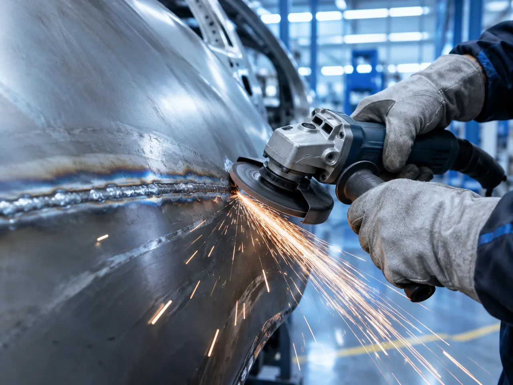
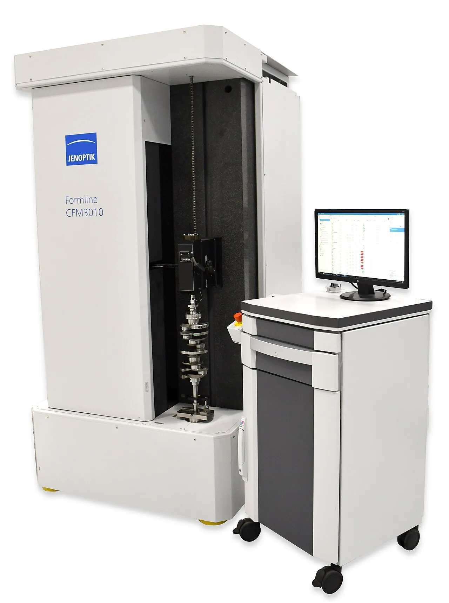
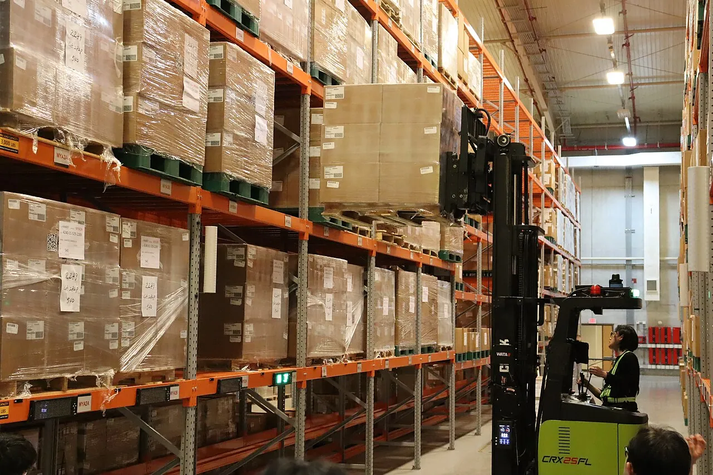

プレスライン
1,500トン
| 油圧深絞り | 大型パネルを一工程で成形 |
|---|---|
| 小型プレス | 150トン、小物部品 |
| 成形段階 | 部品に応じて1～4段 |

せん断、成形、溶接、仕上げ、検査が同じ敷地内で順に続きます。工程の途中で部品が外に出ないため、納期を守れます。
工程の途中で部品が外に出ないため、納期を守れます。保有認証は10件です。
1,500トン
| 油圧深絞り | 大型パネルを一工程で成形 |
|---|---|
| 小型プレス | 150トン、小物部品 |
| 成形段階 | 部品に応じて1～4段 |
11台
| CO₂溶接ロボット | 処理量と均一な品質 |
|---|---|
| 手溶接 | ロボットが届かない継ぎ目 |
| 仕上げ | 溶接ビードと欠陥を除去 |
部品に合わせて工程を組んでいます。
大型パネルは油圧深絞りプレスで一工程で、小物部品は小型プレスで成形します。
ロボット溶接で処理量と均一な品質を確保し、ロボットが届かない継ぎ目は熟練溶接工が担います。
せん断から検査まで同じ敷地内で続くため、部品が途中で外に出ません。
冷延鋼板が入荷し、完成品として出荷されるまでの流れです。

冷延鋼板を受け入れ、鋼種と板厚を確認して登録します。
板材を作業サイズに切断し、端材が少なくなるよう配置します。
部品の形にプレスします。部品に応じて最大4段階に分けて成形します。
大部分はロボットが溶接し、ロボットが届かない継ぎ目は熟練溶接工が仕上げます。

溶接ビードや欠陥を削ります。塗装品質はここで決まります。

寸法と外観を確認し、合格品のみ次の工程へ送ります。
協力塗装会社が担当します。色と塗膜はお客様の仕様に従います。

数量どおりに梱包し、納品書とともに発送します。
ハンイル特装 工場協力会社